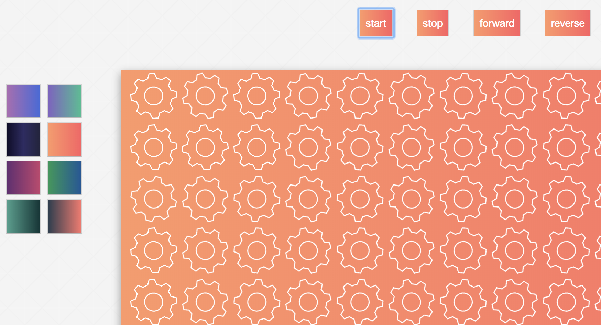
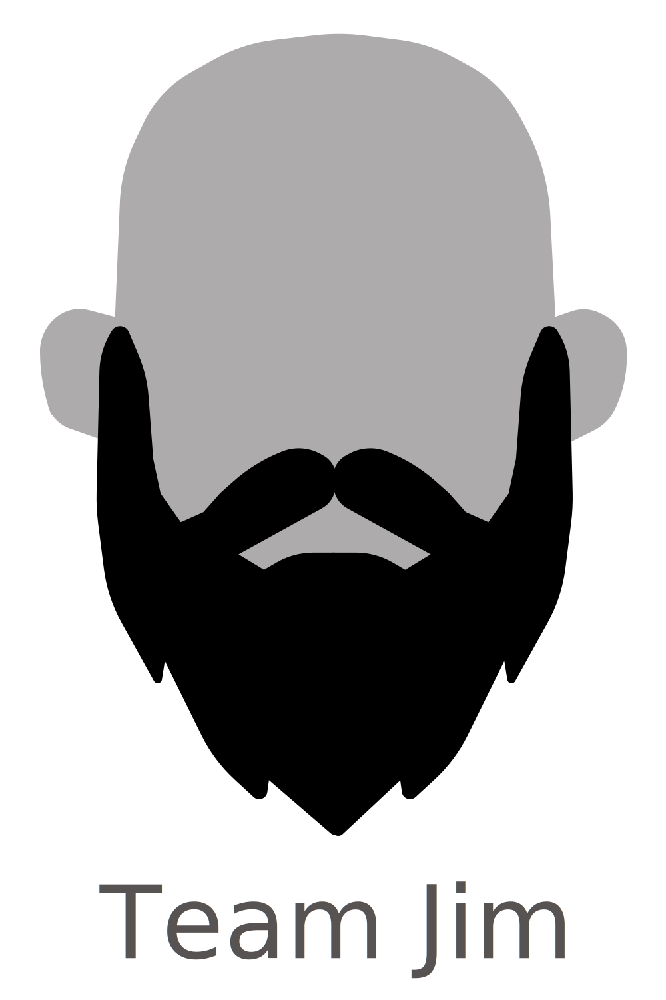
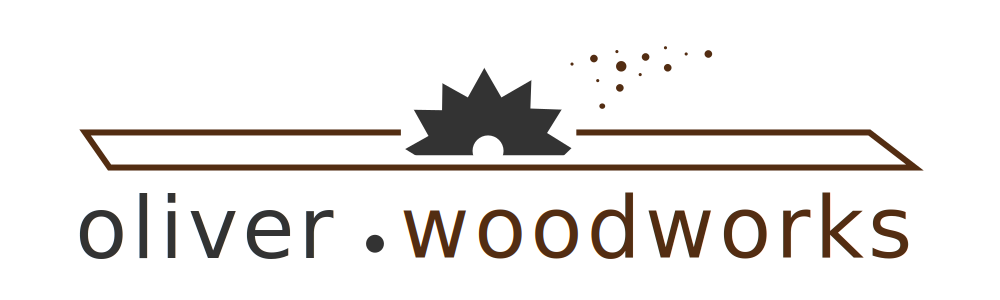

Hi, welcome to my website!
I'm Donny. I'm a Web Developer, Designer and Accessiblity Expert with a passion for clean code and beautiful design.
I am involved in a ton of projects, click the links below to see a few things im currently working on.

Born and raised in Atlanta GA. I love this city! (minus the traffic)
Check out this Marta thing I made!
I currently work for a company that specializes in Web Accessibility
The internet is for everyone but sadly its very difficult for many to access it
check out these logos that I've made
Each one was for a different project, message me for more info on them
 